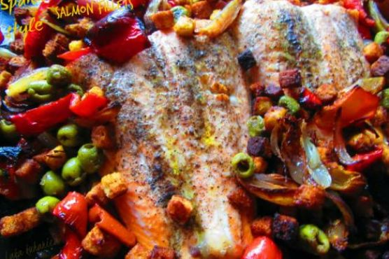

Spanish style salmon fillets


4.55 of 5
-
HEALTH SCORE
100%
-
COOKING TIME
30minutes
-
SERVINGS
2persons
The recipe Spanish style salmon fillets could satisfy your European craving in roughly
30 minutes. This main
course has 953 calories, 53g of protein, and 60g of fat per serving. This gluten free,
dairy free,
and pescatarian recipe serves 2 and costs $7.8 per serving. 1 person were impressed by this recipe. It is
brought
to you by Foodista. Head to the store and pick up smoked paprika, green olives, red bell peppers, and a few
other things
to make it today. All things considered, we decided this recipe deserves a spoonacular score of 79%. This
score
is solid. Users who liked this recipe also liked Tasty Salmon Fillets Asian
Style, Crock Pot
Salmon
Fillets and Asian Style Vegetables, and Crock Pot
Salmon
Fillets and Asian Style Vegetables.
-
60 ml croutons
-
101 ml green olives
-
3 red onions
-
3 red bell peppers
-
1/2 tsps smoked paprika
-
1 1/2 tsps coarse sea salt
-
1 1/2 tsps black ground pepper
-
5 tbs olive oil
-
453 g salmon fillets
Ingredients
Cooking Instructions
- Cut onions into wedges and slice bell peppers into strips.
- Put the croutons, olives, onions, and peppers on a baking sheet.
- Add the smoked paprika, salt, pepper and 3 tablespoons of the olive oil and toss until everything is evenly coated. Bake in the oven at 400F for about 15 minutes.
- Rub the salmon fillets with the remaining 2 tablespoons olive oil and season with the remaining salt and pepper.
- Arrange the fillets among the vegetables and croutons on the baking sheet. Bake for 10-15 minutes or until the salmon is cooked.